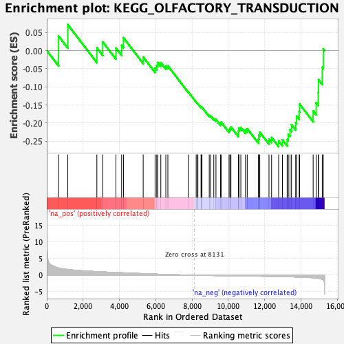
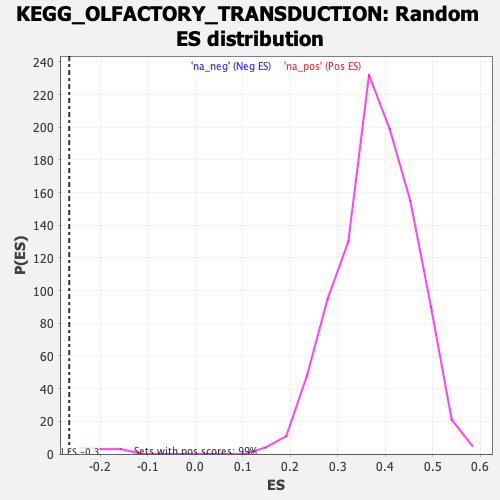

| | | Dataset | DGErankName |
| Phenotype | NoPhenotypeAvailable |
| Upregulated in class | na_neg |
| GeneSet | KEGG_OLFACTORY_TRANSDUCTION |
| Enrichment Score (ES) | -0.2652798 |
| Normalized Enrichment Score (NES) | -1.310576 |
| Nominal p-value | 0.0 |
| FDR q-value | 0.1706016 |
| FWER p-Value | 0.39 |
Table: GSEA Results Summary

Fig 1: Enrichment plot: KEGG_OLFACTORY_TRANSDUCTION
Profile of the Running ES Score & Positions of GeneSet Members on the Rank Ordered List
| SYMBOL | RANK IN GENE LIST | RANK METRIC SCORE | RUNNING ES | CORE ENRICHMENT | | 1 | PRKX | 650 | 2.188 | 0.0400 | No |
| 2 | PRKACB | 1157 | 1.720 | 0.0717 | No |
| 3 | CALM1 | 2757 | 1.085 | 0.0077 | No |
| 4 | CAMK2D | 3080 | 0.989 | 0.0239 | No |
| 5 | CAMK2G | 3806 | 0.817 | 0.0072 | No |
| 6 | PRKG1 | 4120 | 0.745 | 0.0148 | No |
| 7 | CALML6 | 4221 | 0.722 | 0.0355 | No |
| 8 | ARRB2 | 5308 | 0.481 | -0.0176 | No |
| 9 | OR52I1 | 5962 | 0.345 | -0.0474 | No |
| 10 | PDE1C | 6054 | 0.325 | -0.0411 | No |
| 11 | GNAL | 6107 | 0.315 | -0.0327 | No |
| 12 | OR51E2 | 6278 | 0.280 | -0.0333 | No |
| 13 | OR51F1 | 6554 | 0.228 | -0.0427 | No |
| 14 | GUCA1B | 6667 | 0.210 | -0.0421 | No |
| 15 | OR4Q3 | 7788 | 0.042 | -0.1140 | No |
| 16 | CLCA2 | 8226 | -0.011 | -0.1423 | No |
| 17 | OR2C1 | 8296 | -0.018 | -0.1461 | No |
| 18 | OR11G2 | 8320 | -0.020 | -0.1469 | No |
| 19 | OR51T1 | 8492 | -0.041 | -0.1565 | No |
| 20 | CALM2 | 8504 | -0.043 | -0.1556 | No |
| 21 | OR52E4 | 8545 | -0.047 | -0.1565 | No |
| 22 | GRK3 | 8945 | -0.090 | -0.1793 | No |
| 23 | OR52N2 | 9019 | -0.099 | -0.1803 | No |
| 24 | OR5J2 | 9195 | -0.117 | -0.1874 | No |
| 25 | OR8D4 | 9315 | -0.127 | -0.1904 | No |
| 26 | OR4N2 | 9566 | -0.150 | -0.2011 | No |
| 27 | OR1E1 | 9600 | -0.153 | -0.1975 | No |
| 28 | PRKG2 | 10035 | -0.188 | -0.2189 | No |
| 29 | OR6S1 | 10085 | -0.191 | -0.2149 | No |
| 30 | PDC | 10139 | -0.196 | -0.2110 | No |
| 31 | OR56A1 | 10550 | -0.225 | -0.2294 | No |
| 32 | CLCA1 | 10558 | -0.226 | -0.2213 | No |
| 33 | OR8S1 | 10581 | -0.227 | -0.2142 | No |
| 34 | OR2A7 | 10684 | -0.234 | -0.2120 | No |
| 35 | OR2Z1 | 10940 | -0.253 | -0.2192 | No |
| 36 | PRKACA | 11036 | -0.260 | -0.2156 | No |
| 37 | OR7E24 | 11656 | -0.310 | -0.2445 | No |
| 38 | OR5K1 | 11671 | -0.312 | -0.2337 | No |
| 39 | OR52A5 | 11728 | -0.317 | -0.2254 | No |
| 40 | OR52W1 | 12234 | -0.364 | -0.2448 | No |
| 41 | CNGA3 | 12377 | -0.376 | -0.2399 | No |
| 42 | GUCA1A | 12765 | -0.418 | -0.2495 | Yes |
| 43 | OR9A4 | 12974 | -0.444 | -0.2464 | Yes |
| 44 | CAMK2B | 13234 | -0.477 | -0.2454 | Yes |
| 45 | GUCY2D | 13296 | -0.486 | -0.2310 | Yes |
| 46 | CALM3 | 13392 | -0.499 | -0.2184 | Yes |
| 47 | CLCA4 | 13474 | -0.512 | -0.2044 | Yes |
| 48 | OR10A6 | 13704 | -0.547 | -0.1988 | Yes |
| 49 | OR2W1 | 13755 | -0.557 | -0.1810 | Yes |
| 50 | OR7D2 | 13897 | -0.580 | -0.1684 | Yes |
| 51 | OR56B1 | 13921 | -0.583 | -0.1479 | Yes |
| 52 | CNGA4 | 14666 | -0.796 | -0.1667 | Yes |
| 53 | CAMK2A | 14831 | -0.878 | -0.1443 | Yes |
| 54 | OR10A3 | 14944 | -0.953 | -0.1156 | Yes |
| 55 | OR2D3 | 14960 | -0.963 | -0.0803 | Yes |
| 56 | OR9K2 | 15167 | -1.271 | -0.0458 | Yes |
| 57 | OR6C1 | 15223 | -1.436 | 0.0048 | Yes |
Table: GSEA details [plain text format]

Fig 2: KEGG_OLFACTORY_TRANSDUCTION: Random ES distribution
Gene set null distribution of ES for KEGG_OLFACTORY_TRANSDUCTION